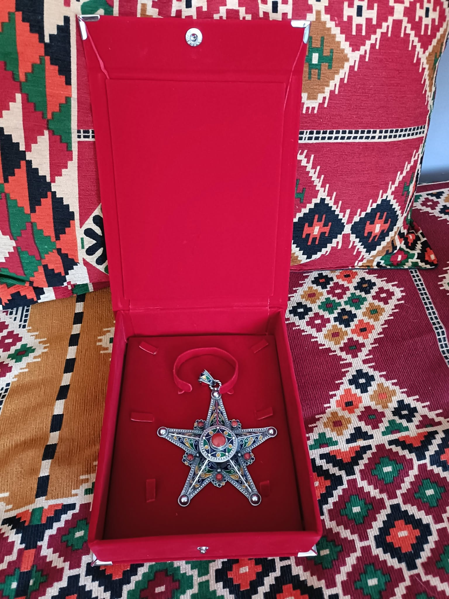

Hacène Metref : Étoile d'argent de chevalier de la culture.
Il avance,
sans épée,
mais le cœur armé de mots.
Son armure ? Des livres.
Son bouclier ? La mémoire des peuples.
Il marche à travers les siècles,
porteur de feu,
porteur de paix,
porteur de pages.
Sur son épaule scintille
l’étoile d’argent,
non pour les conquêtes de guerre,
mais pour les batailles du savoir.
Il ne conquiert pas,
il éclaire.
Dans chaque geste, une leçon,
dans chaque silence, une promesse.
Il s’incline devant les poètes,
honore les conteurs,
et veille,
comme un phare sur la nuit du monde,
à ce que la culture ne s’éteigne jamais.
Chevalier sans couronne,
mais riche de mille voix,
il sème la lumière
dans les cœurs qui lisent,
dans les esprits qui écoutent,
dans les âmes qui rêvent encore.
Djamel Metref
At Yenni le 31 juillet 2025

← Tous les poèmes